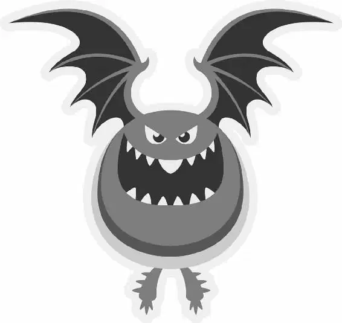

Mike stared into the crowd, hoping someone — anyone — might want to join Oozma Kappa. Finally, the Greek Council president looked at Mike and said, “Yeah, sorry, doesn’t look good. We have to move on. Your team doesn’t qualify.”
Suddenly, a voice rang out, “Yes, it does!” A large figure stepped through the crowd and climbed on top of the car with Mike. It was Sulley, who had followed Mike and watched the whole display. “The star player has just arrived,” he said.
“You?” Mike said, staring at Sulley. “No way!” He turned back to the crowd. “Someone else, please! Anyone else!”
The Greek Council president was losing patience. “We’re shutting down the sign-ups,” she said. “Is he on your team or not?”
Mike threw his little green arms up in surrender and yelled, “Gaah! Fine, yes. He’s on my team.”
Dean Hardscrabble smiled coldly at Mike. “Good luck,” she said, and walked of f.
Sulley just shrugged. “All right, Wazowski, what’s the plan?”
That evening, Mike and Sulley headed over to the Oozma Kappa house, carrying their suitcases. Soon, they reached a prim little house with a covered porch and lace curtains hanging in the windows. “This is a frat house?” Sulley asked.
A balding middle-aged monster opened the door and greeted them warmly. “Hey there, team-mateys!” he said, waving a tentacle. “Come on aboard! It is my honor to welcome you to your new home!”
Mike and Sulley exchanged a dubious look as the fellow ushered them into a house that looked like it belonged to somebody’s grandmother. The place was f illed with knickknacks and needlepoint pillows. “We call this room ‘Party Central,’” a little blobby monster said with a grin.
“Technically, we haven’t had a party here yet,” one part of the two-headed monster explained.
“But when we do,” the other head added, “we’ll be ready!” He f lipped a switch on a remote, and a disco ball dropped from the ceiling — and crashed to the f loor.
The older monster handed Mike a mug. “Whoo! Hot-cocoa train is coming through. Whoa ... next stop ... you!”
Mike tried to get things back on track by addressing his team firmly. “I would like to start us of f f irst by —”
But Sulley interrupted. “So ...,” he said, eyeing the Oozma Kappa crew skeptically, “you guys are in the Scaring Program?”
“We wish!” the balding monster replied. “None of us lasted very long. Guess we just weren’t what old Hardscrabble was looking for.” He handed Sulley his business card. “Don Carlton, ‘mature’ student,” he said with a sigh. “Thirty years in the textile industry and then ol’ dandy Don got downsized. Figured I could throw myself a pity party or go back to school and learn the computers.”
Mike and Sulley nodded blankly, then turned to the yellow two-headed monster. “Hi, I’m Terry with a ‘Y’!” one of the heads said.
“And I’m Terri with an ‘I’!” the shorter but almost-identical head said. “My brother may have gotten the height, but I got —”
“The good looks!” they exclaimed at the same time. The two heads turned to each other and smiled.
Then a big burly monster who was mostly two huge legs and purple fur gruff ly introduced himself. “Hey! I’m Art. New Age philosophy major. Excited to live with you and laugh with you ... and cry with you,” he f inished emotionally, wiping his eyes. He handed Mike and Sulley each a journal with a unicorn on the cover. Sulley looked at it like it was diseased. “I thought you might like to keep a dream journal,” Art explained.
Suddenly, the little blobby monster popped up behind Sulley. Sulley jumped and yelled.
“My name’s Scott Squibbles,” the blob said, blinking his five eyes. “My friends call me Squishy. I’m undeclared, unattached, and pretty much unwelcome anywhere but here.”
Mike tried to take control of the group again. “Well, now that we’ve been introduced, as captain of our team —” he began, but Sulley interrupted once more.
“So basically, you guys have no scaring experience?” Sulley asked.
All the Oozma Kappas began to laugh. “Not a lot!” Squishy said. “But now we’ve got you!”
Don nodded enthusiastically. “You’re about the scariest feller I’ve ever seen, even with them pink polka-dots.”
Mike looked at them all in disbelief. “Well, actually,” he said, “I think I bring the whole package.” But no one seemed to be listening. Squishy had already taken Sulley’s huge hand and was holding it up to his head.
“Your hand is bigger than my whole face!” Squishy said, starstruck.
“He’s like a mountain with fur!” Terri added.
“We thought our dreams were over, but Mike said if we win, they’re letting us in the Scaring Program!” Don called out.
“We’re gonna be real Scarers!” Terry yelled excitedly.
“Yeah, right,” Sulley said doubtfully. He shot Mike a nervous, suspicious look. But Mike just smiled and nodded, as if anything was possible.
